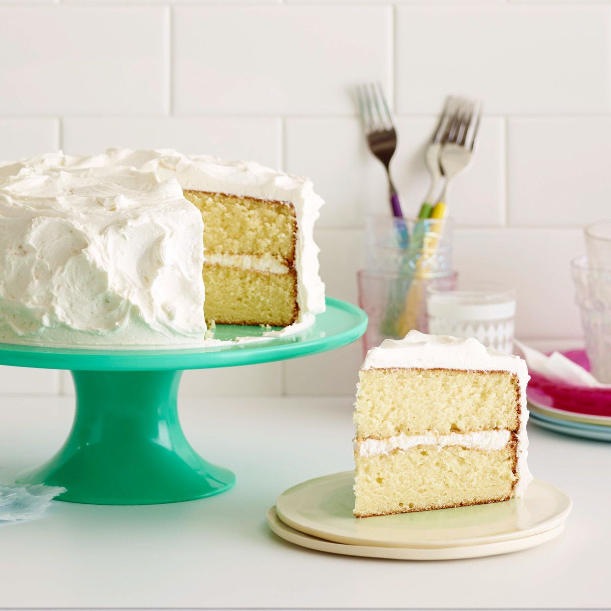
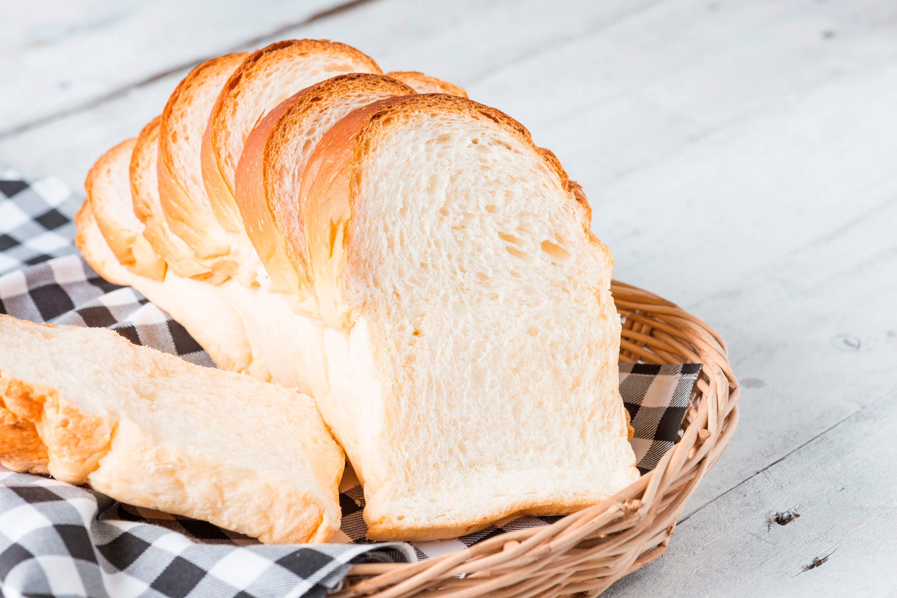
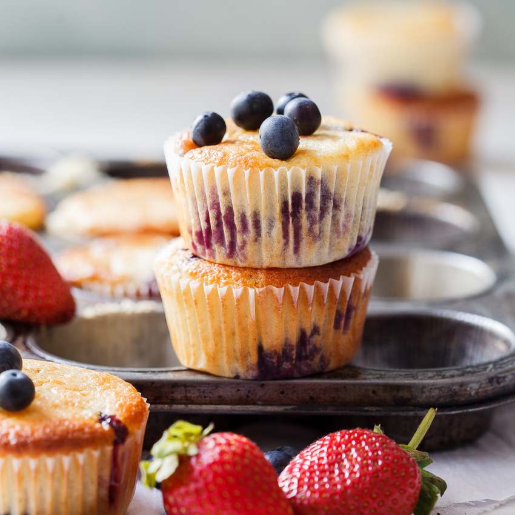

Classic Vanilla Cake
Ingredients:
- 2 cups all-purpose flour
- 1 ½ cups granulated sugar
- ½ cup unsalted butter, softened
- 1 cup milk
- 3 eggs
- 1 teaspoon vanilla extract
- 2 teaspoons baking powder
- ½ teaspoon salt
Procedure:
- Preheat the oven to 350°F (175°C). Grease and flour a cake pan.
- In a large mixing bowl, cream together the butter and sugar until light and fluffy.
- Beat in the eggs one at a time, followed by the vanilla extract.
- In a separate bowl, whisk together the flour, baking powder, and salt.
- Gradually add the dry ingredients to the butter mixture, alternating with the milk. Begin and end with the dry ingredients.
- Pour the batter into the prepared cake pan and smooth the top.
- Bake for 30-35 minutes or until a toothpick inserted into the center comes out clean.
- Remove the cake from the oven and let it cool in the pan for 10 minutes. Then transfer to a wire rack to cool completely.
- Once cooled, frost the cake with your favorite frosting or decorate as desired.
Basic White Bread
Ingredients:
- 3 cups all-purpose flour
- 2 ¼ teaspoons active dry yeast
- 1 cup warm water (about 110°F/43°C)
- 2 tablespoons sugar
- 1 ½ teaspoons salt
- 2 tablespoons olive oil
Procedure:
- In a small bowl, combine the warm water, sugar, and yeast. Let it sit for about 5 minutes or until the mixture becomes frothy.
- In a large mixing bowl, combine the flour and salt. Make a well in the center.
- Pour the yeast mixture and olive oil into the well. Stir until a rough dough forms.
- Transfer the dough onto a floured surface and knead for about 8-10 minutes until smooth and elastic.
- Place the dough in a greased bowl, cover with a clean kitchen towel, and let it rise in a warm place for about 1 hour or until doubled in size.
- Punch down the dough to release any air bubbles. Shape it into a loaf and place it in a greased bread pan.
- Cover the bread pan with the kitchen towel again and let the dough rise for another 30-45 minutes.
- Preheat the oven to 375°F (190°C). Bake the bread for 30-35 minutes or until golden brown and sounds hollow when tapped on the bottom.
- Remove the bread from the oven and let it cool in the pan for a few minutes. Then transfer it to a wire rack to cool completely before slicing.
Mixed Berry Muffins
Ingredients:
- 2 cups all-purpose flour
- ¾ cup granulated sugar
- 2 teaspoons baking powder
- ½ teaspoon baking soda
- ¼ teaspoon salt
- 1 cup milk
- ½ cup unsalted butter, melted
- 2 large eggs
- 1 teaspoon vanilla extract
- 1 ½ cups fresh or frozen berries (such as blueberries, raspberries, or mixed berries)
Procedure:
- Preheat the oven to 375°F (190°C). Line a muffin pan with paper liners or grease the muffin cups.
- In a large bowl, whisk together the flour, sugar, baking powder, baking soda, and salt.
- In a separate bowl, whisk together the milk, melted butter, eggs, and vanilla extract.
- Pour the wet ingredients into the dry ingredients and stir until just combined. Do not overmix.
- Gently fold in the berries.
- Spoon the batter into the prepared muffin cups, filling each about ¾ full.
- Bake for 18-20 minutes or until a toothpick inserted into the center comes out clean.
- Remove the muffins from the oven and let them cool in the pan for 5 minutes. Then transfer them to a wire rack to cool completely.